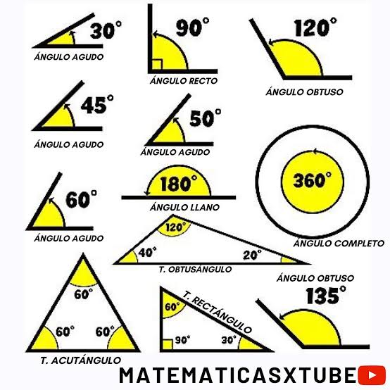

¿Qué es un ángulo?
Un ángulo es la parte del plano comprendida entre dos semirrectas (llamadas lados) que comparten un mismo punto de origen llamado vértice. Se miden comúnmente en grados sexagesimales (°).
Clasificación según su medida
• Ángulo agudo: Mide más de 0° y menos de 90°.
• Ángulo recto: Mide exactamente 90° (sus lados son perpendiculares).
• Ángulo obtuso: Mide más de 90° y menos de 180°.
• Ángulo llano: Mide exactamente 180° (sus lados forman una línea recta).
• Ángulo cóncavo (o entrante): Mide más de 180° y menos de 360°.
• Ángulo completo (o perigonal): Mide exactamente 360° (da una vuelta entera).
Clasificación según su posición y suma
- Ángulos complementarios: Dos ángulos cuya suma es exactamente 90°.
- Ángulos suplementarios: Dos ángulos cuya suma es exactamente 180°.
- Ángulos adyacentes: Comparten un lado y el mismo vértice.
- Ángulos opuestos por el vértice: Son iguales entre sí (congruentes) y se forman cuando dos líneas se cruzan.
// strong RESALTA EL TEXTO//Un ángulo es la abertura que se forma cuando dos líneas rectas se unen en un punto común, llamado vértice.

← Volver a la página principal (≧∀≦)